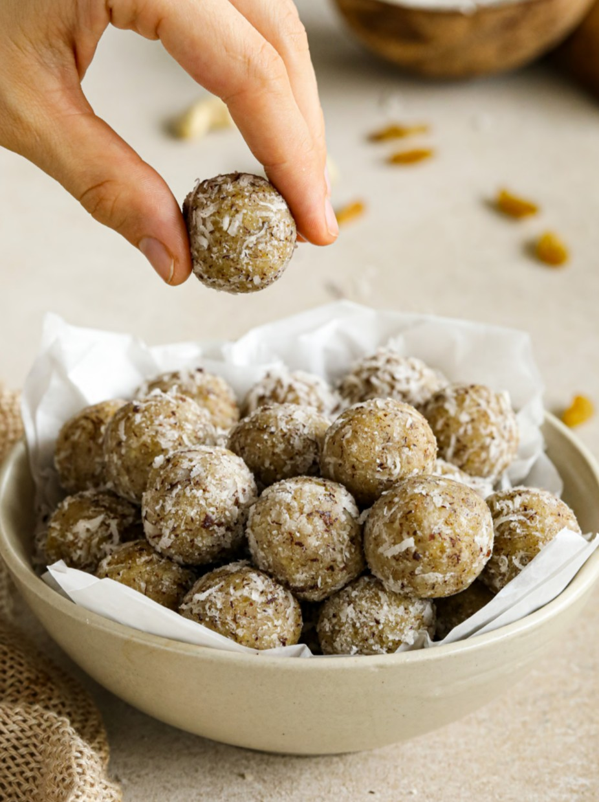

Homepage
Coconut Ladoo

DESCRIPTION
Coconut Ladoos are healthy plant based, and sugar free sweet spheres made from natural ingredients like grated coconut, cashews and raisins
INGREDIENTS
- 1/4 cup cashews, soaked
- 1/2 cup raisins
- 1/2 cup grated dry coconut (gola)
Coating
- 1/4 cup finely grated dry coconut
PREPARATION
- Soak 1/4 cup cashews in water for about 6 hours.
METHOD
- Place all the ingredients, except the coating, into a blender and blend.
- Shape the mixture into small balls and coat them with grated gola
- The ladoos can be served immediately or stored for 3-4 days in the refrigerator.